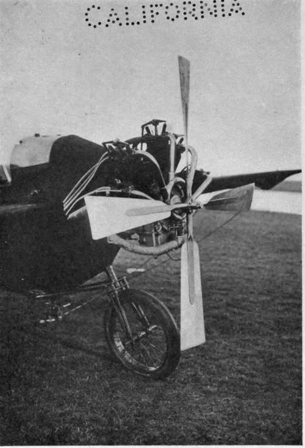

The New Science Of The Air. Part 4
Description
This section is from the book "The New Art Of Flying", by Waldemar Kaempffert. Also available from Amazon: The New Art of Flying.
The New Science Of The Air. Part 4
Up to the height of the " permanent-inversion " layer the temperature falls at a rate which increases somewhat with altitude, but which may be placed roughly at rather over 1/2° C. per hundred metres (say 1° F. per three hundred to four hundred feet), so that on a hot summer's day with a temperature of 900 Fahrenheit at the earth's surface, a man could place himself in fairly cool surroundings if he could rise only fifteen hundred feet. Because of the constant upheavals to which the air is subject in its lower levels, this average rate of temperature reduction, as we ascend, is not often observed. It may even happen that for a short distance the thermometer may rise and not fall at all. Ultimately, the temperature drops at a uniform rate until it reaches a point lower than that reported by any North-pole explorer.
To these fluctuating temperatures in the lowermost layer clouds and rain are due. Warm air tends to rise and to cool as it rises. The cooling air in turn condenses its water vapor into clouds. This process, as well as others that need not be considered here, leads ultimately to the precipitation of the condensed water of atmosphere, as rain, snow, or hail.
The three layers of air which have been disclosed to us by the sensitive instruments of modern meteorology intermingle but slightly. The one floats upon the other as oil floats upon water. Of the great ocean of air at the bottom of which we move and live, three fourths by mass lie below the isothermal layer. All our storms, our clouds, and all dust, except such as may be of volcanic or cosmical origin, are phenomena of the lower two layers.
When the meteorologist has fully discovered the influence which the upper region exerts upon the lower, there is reason to hope that he will be able to foretell the weather not merely a day but perhaps a week or more in advance, and to prepare charts which will be as useful to the aviator as the charts which warn the mariner of shoals and reefs.
Fig. 47. The motor and the propeller of a R. E. P. (Robert Esnault-Pelterie) monoplane. Robert Esnalt-Pelterie has abandoned this four-bladed metal propeller for the more efficient two-bladed wooden propeller.
Photograph by Edwin Levick.
The currents in the various levels of the atmosphere are of as much importance to the aviator as are the ocean currents to the mariner. Hence the necessity of charting the sea of air with scientific care, and hence the value of the work here outlined. The International Commission for Scientific Aeronautics has already accumulated sufficient data to chart aerial routes, comparable with the ocean routes laid down by the various hydrographic officers of the world. Every government will have a special branch of research and will distribute information for aeronauts. The daily weather reports will be amplified to suit the flying man.
Thus far more interest has been shown in Europe than in this country in this matter of vital importance to the aeronaut. A detailed analysis of the wind data available for the German Empire was undertaken by Dr. Richard Assmann at the instance of the " Motorluftschiff-Studiengesellschaft," founded by the Kaiser. That society, whose name translated into English reads " Society for the Study of Motor Airships," recently published the results of Assmann. The Italian Aeronautical Society has performed a similar service for Italy. Such data will be useful to the aeronaut in selecting sites for practising grounds or for aerial harbours, or in choosing the seasons most appropriate for experiment.
Dr. Richard Assmann, director of the Royal Prussian Aeronautical Observatory of Linden-berg, in an article entitled " The Dangers of Aerial Navigation and the Means of Diminish-ing Them," contributed to the Deutsche Zeit-schrift fur Luftschiffahrt, describes the aeronautical weather service that he is organising, and of which Lindenberg Observatory is to be the centre. According to Dr. Assmann at least three similar tentative schemes have already been put into execution in the German Empire. The first was undertaken by the Lindenberg Observatory in 1907, during trial trips made by the " Parseval " airship. Observations of the upper air currents were made simultaneously at five stations by means of pilot balloons and communicated to the crew of the airship, who were thus materially aided in guiding their craft. The second similar undertaking was Dr. Linke's special weather service for aeronauts, conducted at the Frankfort Aeronautical Exposition of 1910. The third aeronautical service was organised by Dr. Polis, at Aachen. It is still in existence, and is intended especially for the benefit of the aero clubs of the Rhein-land. Its usefulness was demonstrated during the army manœuvres in West Prussia in 1910.
Next to the United States, Germany has probably the best organised weather service in the world. It is therefore not astonishing that Germany should be better prepared than any other European state for the adaptation of modern meteorological science to the needs of the airman. Lindenberg Observatory is now equipping the Public Weather Service stations with the apparatus needed for daily observations of the upper air, not primarily for the purpose of improving the weather forecasts, but in order to lessen the dangers of aerial navigation, — dangers, in Assmann's opinion, largely avoidable and to which the loss of twenty valuable lives in Germany during 1910 may be attributed. At the present time the navigator of the air launches his craft with no more knowledge of the meteorological conditions in the upper air than can be surmised from those depicted in the ground-service weather map. The day is not far distant when he will have a weather map all his own.
Continue to: